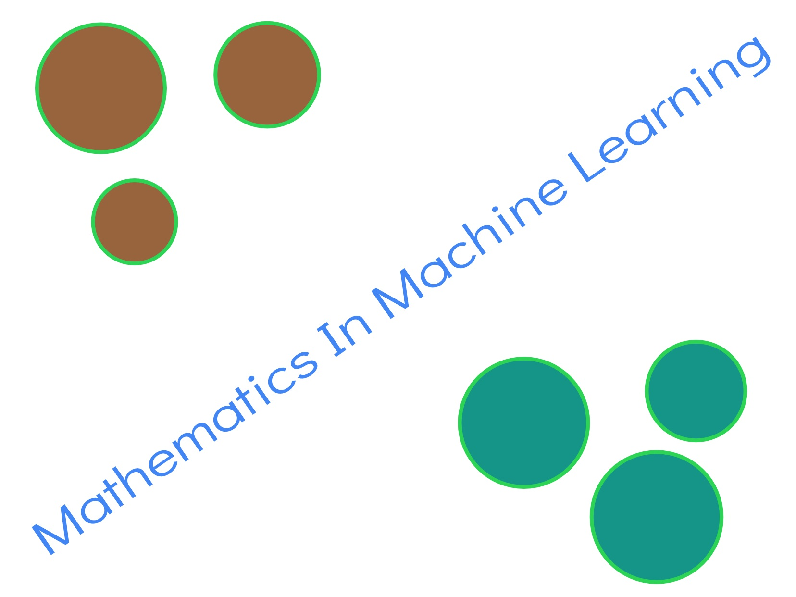

Data is the inner strength of any decision making. Data is nothing but the record of information which can tells previous stories. Lets say middle aged people has higher frequency of mobile phone purchasing rather than the teenage and aged peoples.
Read

Mathematics, Foundation Of Machine Learning.
Machine Learning, a subset of artificial intelligence, can be achieved through accessing data and use it learn for computers. Input and output data is used to build reusable mathematical logic, relation between input and output for further predictions.
Read
Distances Techniques In Machine Learning.
Distance in machine learning is generally used to find the similarity in between two data points.In both supervise machine learning algorithms like k nearest algorithm and unsupervised machine learning algorithm like clustering distance is calculated for clubbing the related data points.
Read